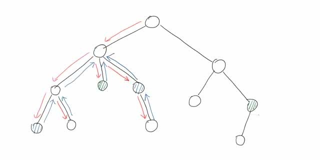

笔记 24-08-06
本文最后更新于 2024年8月9日 晚上
写在前面
我记这个笔记并不是去上什么课了，单纯是因为翻开书突然发现自己什么都不会（
$O(n\log n)$ 时间复杂度求最长上升子序列
算法思路
贪心思想，每次最有可能更新最长上升子序列长度的一定是更小的数。（感性理解）
算法步骤
设原数组 $a$，新开数组 $d$，长度 $\text{len}=0$。
- 若 $a_i>d_\text{len}$，$\text{len}\leftarrow\text{len}+1$，$d_\text{len}\leftarrow a_i$，即在 $d$ 末尾追加 $a_i$。
- 若 $a_i<d_\text{len}$，则找到第一个大于等于 $a_i$ 的 $d_j$，$d_j\leftarrow a_i$。
- 若 $a_i=d_\text{len}$，不做任何操作，当然把这个归到操作 $2$ 上也没问题。
正确性
操作 $1$、$3$ 相当于找到了LIS的尾。
操作 $2$ 相当于更新LIS最优路径，$d$ 存储候选元素。这个路径可能走也可能不走，但最后一个数更新就表示走这条路径。
三个操作保持了LIS的单调性，保持了算法的正确性。
算法实现
每次判断当前元素与 $d$ 末尾元素。如果 $a_i\ge d_\text{len}$，使用 std::lower_bound() 二分查找左边界并替换。
具体实现见代码。
最长不下降子序列
类似，有小变动。
设原数组 $a$，新开数组 $d$，长度 $\text{len}=0$。
- 若 $a_i\ge d_\text{len}$，$\text{len}\leftarrow\text{len}+1$，$d_\text{len}\leftarrow a_i$，即在 $d$ 末尾追加 $a_i$。
- 若 $a_i<d_\text{len}$，则找到第一个大于 $a_i$ 的 $d_j$，$d_j\leftarrow a_i$。
代码
方法一
和上面的一样，先判断 $d_\text{len}$ 追加，再替换。
AC 728.00KB 22ms
1 | |
方法二
来自OI-Wiki。
先将所有元素初始化为 $\infty$，这样替换也是追加。
AC 728.00KB 22ms (一模一样)
1 | |
模拟退火算法
之前的文章 - 随机化笔记 24-02-04
当前方向 $x$，随机方向 $x_1$，决定是否朝这个方向移动。
- 若更优，即 $f(x')>f(x)$，则移动；
- 若更劣，即 $f(x')\le f(x)$，则有概率 $P$ 移动：
$$
P=\exp(\frac{f(x')-f(x)}{kT})
$$
其中，参数 $k$ 人为确定，温度 $T$ 随时间减小。这意味着，$f(x')$ 比 $f(x)$ 劣得更多、进行时间越长、参数 $k$ 越小，都会导致越难移动。
倍增求LCA
预处理
$f_{i,j}$ 表示 $i$ 的 $2^j$ 辈祖先（$\text{dep}$ 低 $2^j$）。
分两步求：先走 $2^{j-1}$ 步，再走 $2^{j-1}$ 步。
$$
f_{i,j}=f_{f_{i,j-1},j-1}
$$
1 | |
时间复杂度 $O(n\log n)$。
求解
- 深的与浅的到达同一高度；
- 两端同时往上跳。时间复杂度 $O(\log n)$。
1
2
3
4
5
6
7
8// k=logN
int lca(int x, int y) {
if (dep[x]>dep[y]) swap(x,y);
for (int i=k; ~i; --i) if (dep[f[y][i]]>=dep[x]) y=f[y][i];
if (x==y) return x;
for (int i=k; ~i; --i) if (f[x][i]!=f[y][i]) x=f[x][i], y=f[y][i];
return f[x][0];
}
RMQ求LCA
先求欧拉序。令 $l\le r$，查找 $[l,r]$ 中欧拉序编号最小的点，对应节点即为LCA。
预处理时间复杂度 $O(n\log n)$，查询 $O(1)$。
好像有一种动态区间RMQ算法能做到 $O(n)$？
Tarjan算法求LCA
说句闲话，Tarjan这次借助自己发明的并查集二次发明了一个新算法。
算法实现
离线算法。
- 第一次访问更新 $\text{vis}$；
- 回溯过程更新 $\text{fa}$。
1 | |
时间复杂度 $O(n)$。
算法原理
该算法巧妙地利用了回溯的特性。由于回溯从低到高进行，$\text{fa}$ 只会更新到LCA上。
首先，树上有几对关键点，表示待求LCA的点对。图上有两对（蓝和绿），挑蓝的一对讲。

在以LCA为根节点的子树内时，遍历过的节点的 $\text{fa}$ 值都会更新到LCA上。
如果不进入上一层子树，这些节点的 $\text{fa}$ 值就都在这一个点上了。
也就是说，$u$ 遍历完成时，$u$ 下方节点的 $\text{fa}$ 都在 $u$ 上。
然后最关键的来了，如果说存在访问 $u\leftrightarrow v$，$v$ 已遍历，说明 $\text{lca}_{u,v}$ 已遍历，且 $\text{fa}_u=\text{lca}_{u,v}$。
$u\rightarrow\text{lca}$ 回溯过程是确定的，因为只有回溯到LCA才能访问 $v$。
另外，回溯不到LCA上方，意味着 $\text{fa}$ 就更新到了LCA。
你们应该是没有理解的，不过无所谓，用到的概率不大。我以后会专门写一篇的。
ST表
这个也是那天学的，我已经写出一篇文章了。